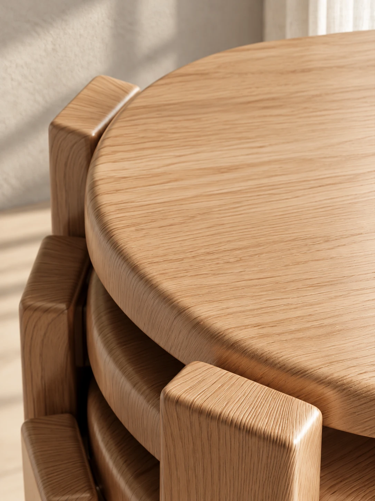
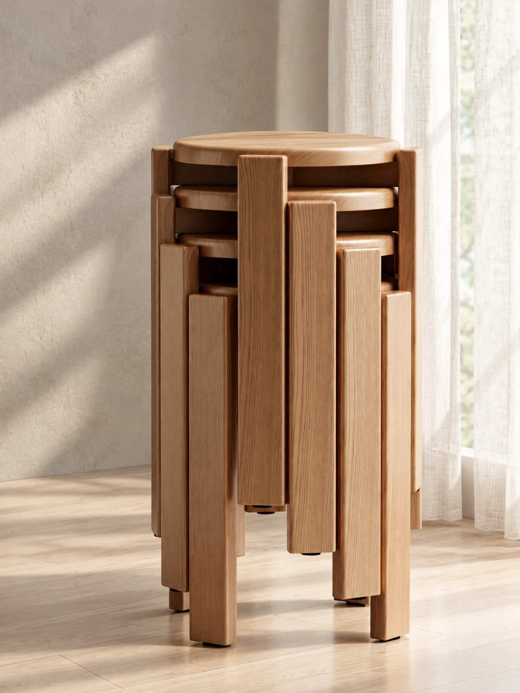
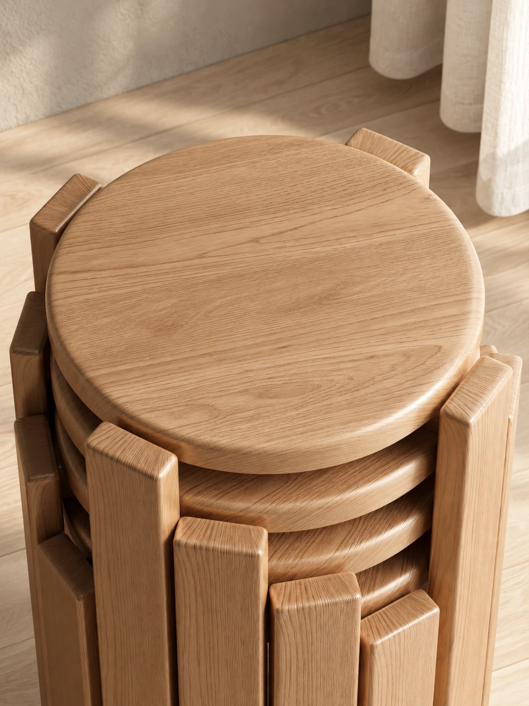
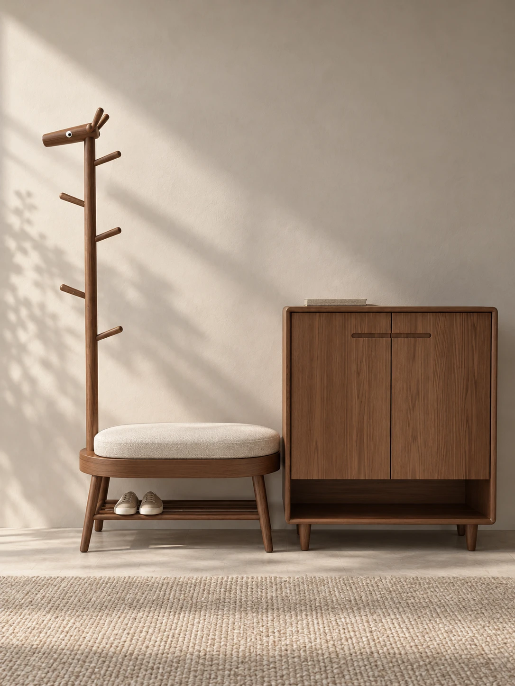
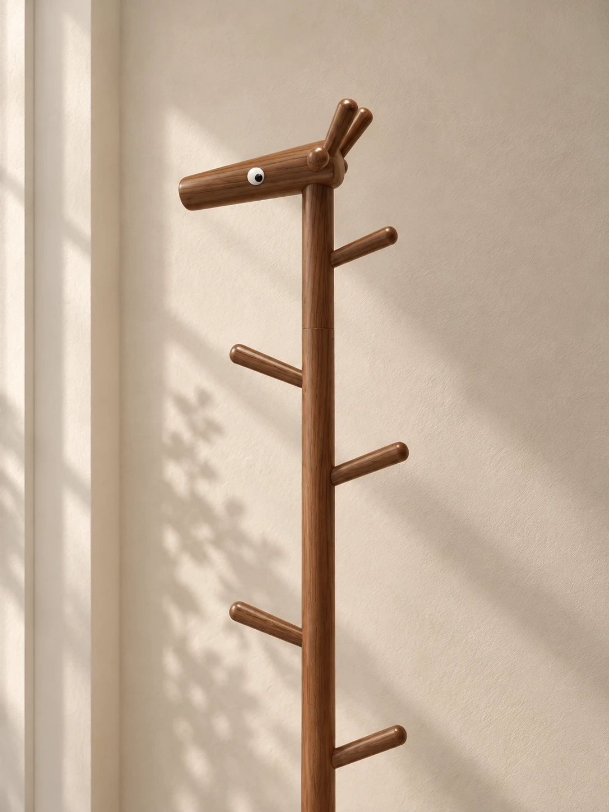
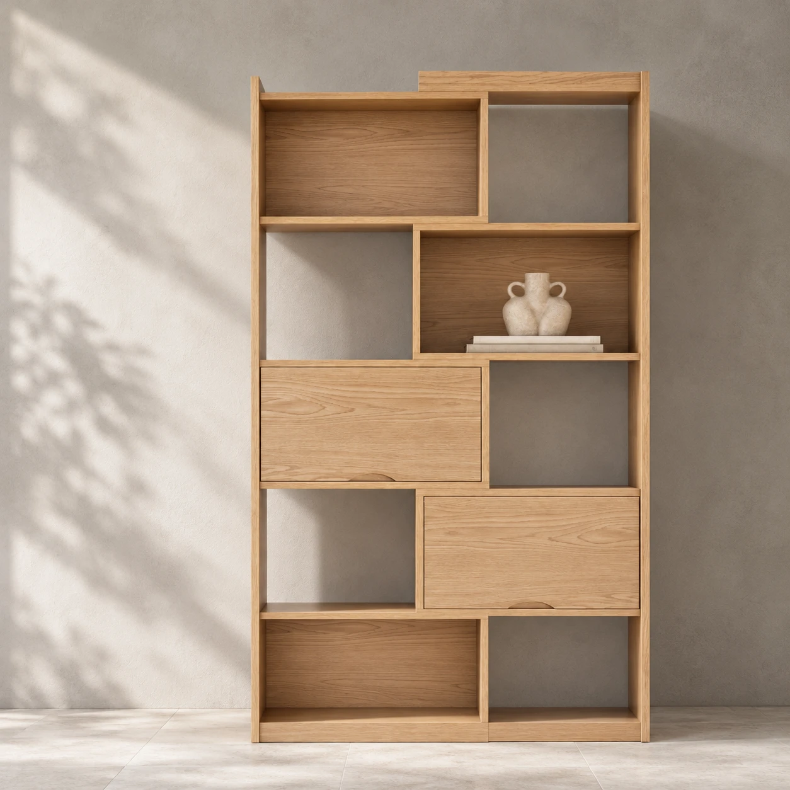
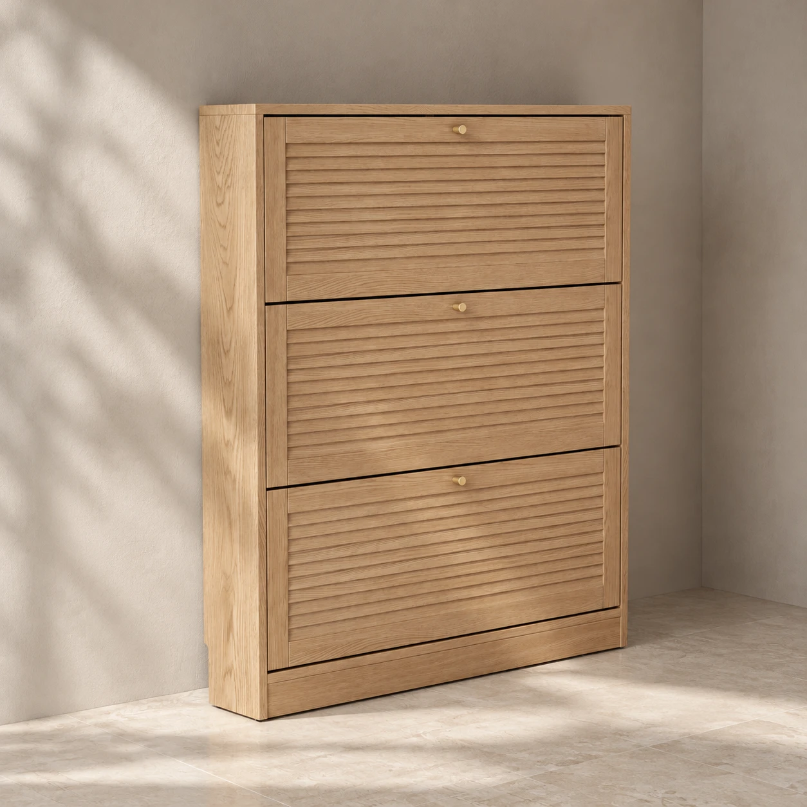
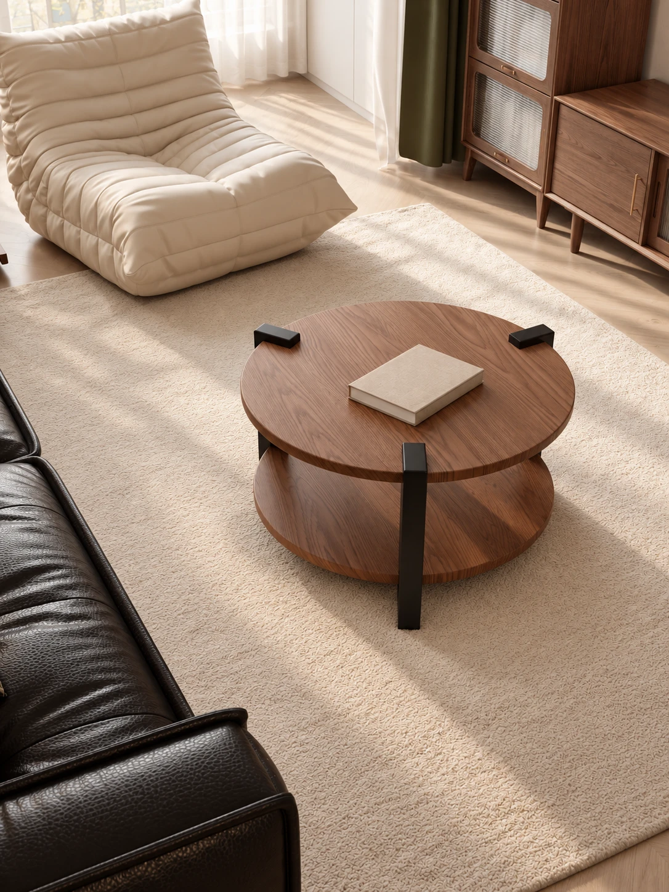

← 返回作品选集
01 / 项目作品总览 02 / 06-stools-joinery 03 / 05-stools-medium 04 / 07-stools-top 05 / 02-entry-hero 
06 / 09-entry-bench-detail 
07 / 08-entry-medium 08 / 10-coat-tree-detail 09 / 03-shelving-hero 10 / 04-shoe-cabinet 
11 / 11-living-room 12 / 14-coffee-table 
13 / 12-bedroom 
14 / 13-bar-dining
产品渲染
家具产品渲染
围绕家具产品的材质、光影与场景氛围，制作面向电商展示及产品宣传的渲染画面。
项目类型产品渲染
个人职责材质制作 / 灯光与渲染
使用工具3ds Max / V-Ray / Chaos Vantage
项目背景
家具产品商业展示项目，结合产品展示需求，完成多批次家具产品的视觉表现。
我的工作
- 完成家具产品材质与灯光设置，调整构图及空间氛围。
- 根据运营反馈优化画面，支持电商与产品宣传的视觉交付。
- 梳理材质和光影制作流程，统一渲染输出标准。
作品与过程
14 张图片 · 点击放大查看

















职责与署名
商业项目作品；个人职责为产品渲染与视觉表现。